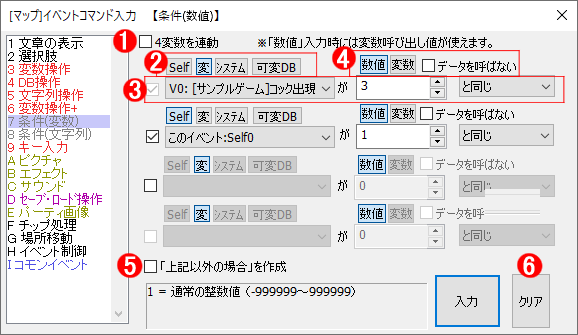

イベントコマンド 【条件（数値）】
変数の状態によってイベントコマンドを最大3択に分岐させます。

【基本的な説明】
条件分岐は最大4択まで条件を指定することができます。なお、条件判定は上から順番に行われます。たとえば上から順に、
・V0 が 3 以上
・V0 が 3 と同じ
という二択の条件分岐が設定されていたときにV0=3だったらば、一番上の分岐（V0=3なので「3以上」に当てはまる）が選択され、二つ目の分岐は無視されてしまいます。つまり、この書き方は悪い例です。
【各部の説明】
１．4変数を連動
このチェックをオンにしていると、条件分岐の対象とするプルダウンリストの3変数全てが一番上の変数と同じ変数に設定されます。
２．比較元の指定「Self/変/システム/可変DB」
比較元の種類を切り替えます。前からセルフ変数/通常変数と予備変数/システム変数/可変データベース、です。
なお、可変データベースの指定時に、変数呼び出し値（1600000など）を指定することはできません。
３．条件設定部
ここに分岐させる条件を設定します。比較する値を入力する数値欄には、変数も使用可能です（例：2000000と指定すると通常変数0番の値と比較される）。比較方法には以下の7種類があります。
・より大きい … 変数が比較値より大きい場合に分岐します。
・以上 … 変数が比較値以上の場合に分岐します。
・と同じ … 変数が比較値と同じ場合に分岐します。
・以下 … 変数が比較値以下の場合に分岐します。
・未満 … 変数が比較値未満の場合に分岐します。
・以外 … 変数が比較値以外の場合に分岐します。
・とのビット積 … 変数と比較値のビット積を取った結果が比較値と同じなら分岐します。
※「とのビット積」の例は難しいので、実例を以下に示します。
まず情報学的な知識として、2進数の表現を理解している必要があります。まず変数の値を2進数に直したとき、その1と0のビットを比較値と比較します。ここでは変数V0に5（2進数で101）が格納されており、比較値として1（2進数で001）が設定されていたとします。
| 変数の値 | 101（5） |
| 比較値 | 001（1） |
このとき、変数の1の箇所は比較値のビットをカバーしているので、この場合は分岐が成立します。しかし、比較値が3（2進数で011）の場合は、
| 変数の値 | 101（5） |
| 比較値 | 011（3） |
のようになり、変数の値が比較値の2桁目のビットをカバーできなくなるため、この場合は条件が成立せず、次の条件判定に移ります。
ちなみに、比較値を0（2進数で000）にしてビット積の条件判定を行うと、当然ながらどんな状況でも成立します。
４．比較先の指定「数字/変数」
比較先の種類を切り替えます。
またデータを呼ばないをチェックしていると100万以上の数値を入れても変数を呼ばず、そのままの整数値として扱います。
５．「上記以外の場合」を作成
どの条件にも当てはまらなかった場合の分岐先を作成します。
６．「入力」「クリア」ボタン
・入力……条件文がコマンドとして入力され、「最初の選択肢」内にカーソルが移動します。
Shiftを押しながらクリックすると、入力後のコマンド一覧側のカーソルが「選択肢の後ろ」に移動します。 (Ver3.582以降)
・クリア……入力内容をリセットします。